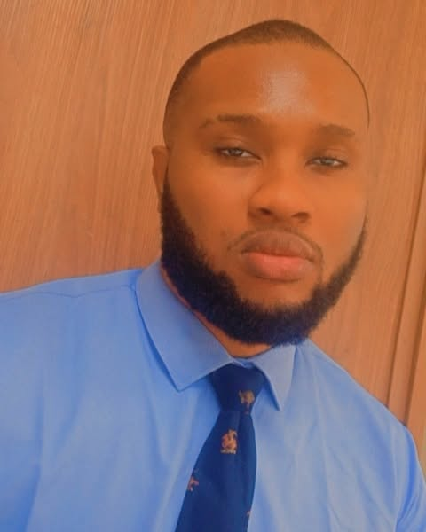

Bright Chijiokem Ahunanya

Summary
Versatile Doctor of Optometry and emerging web developer seeking opportunities to combine clinical expertise, strong analytical skills, and growing proficiency in Python and front-end technologies to create user-friendly, health-focused digital solutions. Passionate about lifelong learning, clear communication, and applying creative problem-solving to both patient care and technology projects.
Education
- Doctor of Optometry (O.D.), Imo State University Owerri, Imo State (2019)
- West African Senior School Certificate (WASSCE), Madonna Senior Secondary School for science Ihitte Uboma, Imo State (2011)
Work Experience
- Clinical Optometrist
Malik Eye Clinic – 2025 – present
- Conduct comprehensive eye examinations, including refraction, ocular health assessments, and contact-lens fittings.
- Diagnose and manage common eye diseases such as glaucoma, dry-eye syndrome, and allergic conjunctivitis.
- Provide patient education on visual hygiene, preventive eye care, and lifestyle adjustments to protect vision.
- Collaborate with ophthalmologists and other healthcare professionals for co-management of surgical or complex cases.
- Clinical Optometrist
City Eye Clinic – 2021 – 2024
- Conduct comprehensive eye examinations, including refraction, ocular health assessments, and contact-lens fittings.
- Diagnose and manage common eye diseases such as glaucoma, dry-eye syndrome, and allergic conjunctivitis.
- Provide patient education on visual hygiene, preventive eye care, and lifestyle adjustments to protect vision.
- Collaborate with ophthalmologists and other healthcare professionals for co-management of surgical or complex cases.
- Intern Optometrist
Eye Foundation Hospital – 2020 – 2021
- Performed preliminary eye tests (visual acuity, tonometry, visual field) under supervision of senior optometrists.
- Assisted in pre- and post-operative care for cataract and refractive surgery patients.
- Counseled patients on lens options, spectacle prescriptions, and safe contact-lens practices.
- Participated in weekly clinical case reviews to develop diagnostic and treatment-planning skills.
- Extern Optometrist
Perofak Eye Clinic – 2018 – 2019
- Conducted routine vision screenings and basic refractions for patients of all ages.
- Learned and applied slit-lamp and fundus examination techniques to detect anterior and posterior segment conditions.
- Supported senior optometrists in fitting specialty lenses and managing pediatric patients.
- Maintained accurate patient records and ensured compliance with clinic protocols and hygiene standards.
Skills
- Clinical Skills: Comprehensive eye exams, refraction, contact lens fitting, ocular disease management.
- Technical Skills: Proficient in HTML, CSS, JavaScript; familiar with Python, Django and Flask frameworks.
- Soft Skills: Strong communication, patient education, teamwork, problem-solving, adaptability.
- Languages: Fluent in English and Igbo. and a little Arabic
Awards and Certifications
- Member Saudi Commission for Health Specialties (December, 2024)
- Member Nigerian Optometric Association (August, 2020)
Others
@ 2025 Bright Ahunanya. All Rights Reserved.